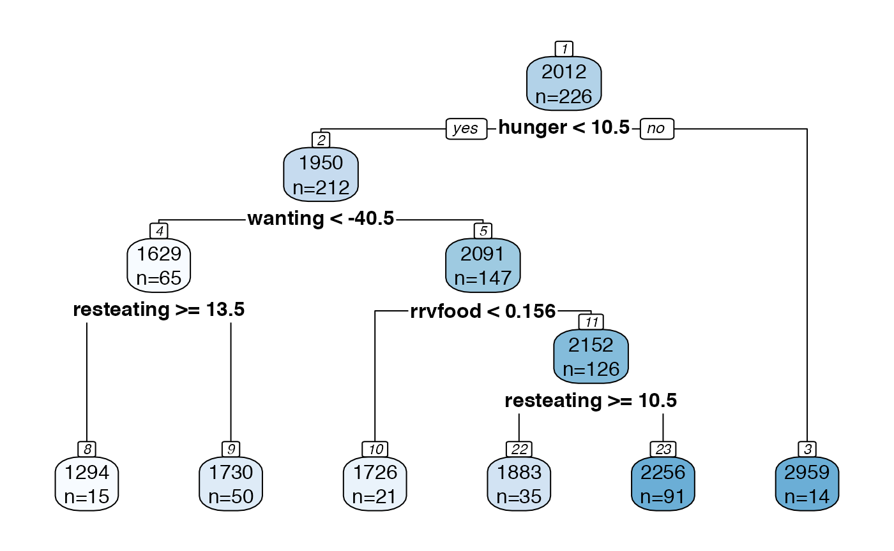

Tutorial: using treevalues to perform inference on rpart trees
Source: vignettes/basic_inference_tutorial.Rmd
basic_inference_tutorial.RmdIn this tutorial, we demonstrate how to use the treevalues package to perform inference on a CART (Breiman et al. (1984)) tree fit using the rpart package (Therneau and Atkinson (2019)). Throughout this tutorial, we work with an example tree fit to the Box Lunch Study dataset, which was originally provided in the visTree package.
We start by loading the two packages we will be working with.
remotes::install_github("anna-neufeld/treevalues")
library(treevalues)
library(rpart)
data(blsdata, package="treevalues")Building the tree
The treevalues package is designed for use with the rpart package, and so all trees should be built using rpart. All trees should be built with the parameter model=TRUE, which saves a copy of the training data inside of the fitted rpart object (this is useful so that the data need not be separately passed to each inference function).
bls.tree <-rpart(kcal24h0~hunger+disinhibition+resteating+rrvfood+liking+wanting, model = TRUE, data = blsdata, cp=0.02)The arguement cp, or complexity parameter, is a scaled version of the complexity parameter \(\lambda\) described in our manuscript, \(\lambda =\text{cp} \times \sum_{i=1}^n (y_i-\bar{y})^2\). The larger the value of cp, the more the tree will be pruned.
We begin by plotting our tree. While we could plot the tree using plot() from the rpart package, or rpart.plot() from the rpart.plot() package, we instead use our internaltreeval.plot() function. However, since we are just exploring and have not yet decided to conduct any inference, we set inferenceType=0 (no p-values or confidence intervals are computed).
treeval.plot(bls.tree, inferenceType=0)
Inference on a pair of sibling regions.
Suppose we are interested in the whether or not the bottom-right split on resteating >= 14 is “statistically significant.” This means that we want a p-value for the difference in means between the nodes labeled 8 and 9 in our plot above. From our manuscript, we know that inference on this difference in means comes down to conditioning on the event that the branch that led to this split appearing in the tree.
branch <- getBranch(bls.tree,8)
branch
## [1] "hunger < 10.5" "wanting < -40.531939285"
## [3] "resteating >= 13.5"We now pass this branch into branchInference, which does inference conditional on the event that this branch appeared in the tree. We should specify if we want to do inference just on region 8, or on the difference between region 8 and its sibling, region 9. In this section, we do the latter.
result <- branchInference(bls.tree, branch, type="sib")
result$confint
## [1] -1106.7470 136.5523
result$pval
## [1] 0.9002555Note that, by default, this is a 95% confidence interval, and the pvalue corresponds to testing the null hypothesis that \(\nu_{sib}^T \mu = 0\). We can change the null hypothesis by specifiying a different constant \(c\), and we can change the confidence interval by specifying \(\alpha\). By default, \(\alpha=0.05\), so the \(CI\) is a \(1-\alpha\) CI.
result <- branchInference(bls.tree, branch, type="sib", alpha=0.1)
result$confint
## [1] -667.0025 106.8585
result$pval
## [1] 0.9002555The full result object contains a little bit of additional information, such as
Inference for the entire tree
We can also bypass the need to specify a specific branch by making the following plot, which includes p-values for each split and confidence intervals for each region. We can just see this in a plot. By default, the plot makes 95%
treeval.plot(bls.tree, inferenceType=1)
treeval.plot(bls.tree, inferenceType=2)